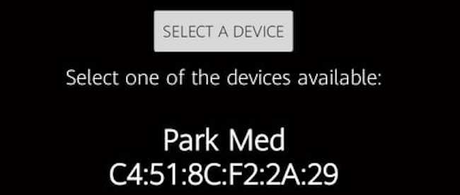
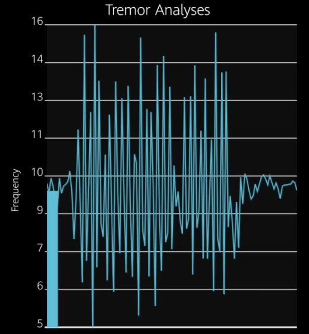

WELCOME TO BIO PROTECH APP
USER MANUAL
CONNECT TO YOUR PARK MED
- Make sure your Park Med is on.
- The green LED on the Park Med will indicate if it is turned on.
- The red LED will indicate if Park Med is prepared to connect.
- If the red LED is on, go back to the Home Page, open the Menu and click on the Bluetooth
Button.
- If the connection is successful the red LED will turned off the Bio Protech's logo will turn
green.
- If the connection isn't successful see ADDING NEW DEVICE section.
ADDING NEW DEVICE
- If you have a new Park Med or your Park Med stopped connecting.
- Go to the Settings Page by clicking on the Settings

- Inside of the Settings Page, click on 'SELECT A DEVICE'.
- After a few seconds, the nearby Park Meds will show up.
- Tap on one of the available devices and a message will appear saying the Park Med is
saved.
- Your Park Med will be registered and ready to connect.

USING VIBRATIONS
- Ensure your Park Med is connected. If it isn't check the CONNECT TO YOUR PARK MED
sections.
- To start the vibration, go to the Home Page and click on the START button.
- To stop the frequency, click on the STOP button.
- To change the frequency, use the slider tool to select the frequency needed. The slider is
programmed to
change the frequency as soon as you release it.

TREMOR GRAPH
- Ensure your Park Med is connected. If it isn't check the CONNECT TO YOUR PARK MED
sections.
- To check the tremor graph, go to the Graph Page by clicking on the Graph in the menu.
- After a few seconds, the tremor data will be displayed.
- To stop the graph, close the Graph Page.

Plase note, the graph doesn't provide accurate data!
SAVING GRAPH
- While the graph is displaying data.
- Click on the Save button to turn on the recording.
- To turn off the recoding, click on the Save button again.
- The file will be saved inside of a Bio Protech folder on the internal memory of your
smartphone.
- Those files can be be used on an external website to see the recorded data.
- Bio Protech reccommends the online graph maker Plotly.com